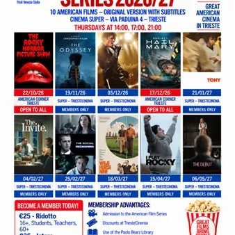

da gio 19 nov a gio 6 mag
American Film Series 2026/2027
Rassegna organizzata dall'Associazione Italoamericana FVG che porta a Trieste i film americani in lingua originale inglese con sottotitoli. Tutte le proiezioni si svolgono alle ore 14:00, 17:00 e 21:00. La partecipazione alla Rassegna è riservata ai soci dell'Associazione Italo…
 Indicazioni
Indicazioni
- Costi e prenotazioni
- Costo non indicato · Prenotazione non indicata
- Programma
- Programma da verificare. Apri la fonte ufficiale per orari e possibili aggiornamenti.
- In caso di maltempo
- Nessuna indicazione specifica pubblicata.
- Note
- Acquisito automaticamente dalla fonte.
L’EVENTO
Descrizione completa
Rassegna organizzata dall'Associazione Italoamericana FVG che porta a Trieste i film americani in lingua originale inglese con sottotitoli. Tutte le proiezioni si svolgono alle ore 14:00, 17:00 e 21:00.
La partecipazione alla Rassegna è riservata ai soci dell'Associazione Italo Americana FVG.
Tesseramento 2026/27
€25 – Quota ridotta: studenti dai 16 anni, docenti e 60+
€35 – Quota intera: adulti
Online, 24 ore su 24, su www.aiafvg.it Oppure presso la sede:
Piazza Sant'Antonio Nuovo 6, Trieste
Lunedì–Sabato 9:00–13:00
Lunedì–Venerdì 16:00–19:00 PROGRAMMA:
Giovedì 19 novembre 2026 presso Cinema Super, via Paduina 4
"The Odyssey" di Christopher Nolan.
Matt Damon interpreta Odisseo, impegnato nel pericoloso viaggio di ritorno a Itaca dopo la guerra di Troia. Ad accompagnarlo sullo schermo un cast stellare: Tom Holland, Anne Hathaway, Robert Pattinson, Zendaya, Lupita Nyong'o e Charlize Theron.
Giovedì 3 dicembre 2026 presso Cinema Super, via Paduina 4
"Michael" di Antoine Fuqua.
Jafaar Jackson, al suo debutto sul grandeschermo, interpreta suo zio. Il film ripercorre la vita di Michael Jackson dagli inizi con i Jackson 5 fino alla grande notorietà in tutto il mondo come solista.
Giovedì 17 dicembre 2026 presso la sede dell'American Corner, piazza Sant'Antonio Nuovo 6
"Project Hail Mary" di Phil Lord e Christopher Miller
Il film racconta la storia di un insegnante che si risveglia dal coma e si trova in un'astronave, completamente da solo e affetto da amnesia retrograda.
Ingresso libero per tutti
Giovedì 21 gennaio 2027 presso cinema Super, via Paduina 4
"Tony" di Matt Johnson
Il film racconta la giovinezza di Anthony Bourdain che, trasferitosi a Capo Cod nel 1975 per stare con la propria fidanzata, scopre il mondo caotico della ristorazione lavorando in un locale della zona. Sotto la guida rigorosa di un mentore severo, interpretato da Antonio Banderas, il giovane ribelle trasforma la propria vita e getta le basi per la sua futura carriera di pioniere della narrazione culinaria.
Giovedì 4 febbraio 2027 presso cinema Super, via Paduina 4
"The Invite" di Olivia Wilde
racconta la storia di Joe e Angela, una coppia sposata nel bel mezzo di una profonda crisi, che invita a cena i vicini del piano di sopra, Piña e Hawk. La serata prende una piega inaspettata quando i vicini – una coppia molto disinibita – propongono un incontro di scambismo. Questa provocazione erotica farà emergere tutti i segreti nascosti e i risentimenti che covano nel loro matrimonio.
Giovedì 25 febbraio 2027 presso Cinema Super, via Paduina 4
"The Social Reckoning" di Aaron Sorkin
Il film racconta la storia vera dell'ingegnere informatico Frances Haugen, che nel 2021 ha fatto trapelare migliaia di documenti riservati di Facebook.
Giovedì 18 marzo 2027 presso cinema Super, via Paduina 4
"Wilde Horse Nine" di Martin McDonagh
Alla vigilia del colpo di Stato in Cile del 1973, due agenti della CIA vengono inviati sull'Isola di Pasqua sotto la copertura di una vacanza. Lì, il più anziano dei due, affetto dal morbo di Alzheimer, decide di rivelare segreti di Stato e di scrivere le proprie memorie.
Giovedì 15 aprile 2027 presso cinema Super, via Paduina 4
"I Play Rocky" di Peter Farrelly
Il film racconta la storia straordinaria di Sylvester Stallone (Anthony Ippolito), che a metà degli anni '70 era un attore sconosciuto che faticava a sbarcare il lunario, con una lieve paralisi facciale e un difetto di pronuncia.
Giovedì 6 maggio 2027 presso cinema Super, via Paduina 4
"The Debut" di Jesse Eisenberg Mona Friedman, una timida casalinga del New Jersey, ottiene un ruolo minore in un musical amatoriale locale. Spinta dal regista autoritario Jerry ad adottare il “Metodo”, sviluppa un’ossessione maniacale che confonde il confine tra finzione teatrale e realtà, stravolgendo completamente la sua vita.
IL PROGRAMMA
Programma e orari
Appuntamenti raccolti dalle fonti elencate. Dove manca un orario, non è ancora disponibile in questa scheda.
Programma pubblicato
- Dal 2026-11-19 al 2027-05-06
INFORMAZIONI UTILI
Prima di partire
- Controllare la fonte prima di partire.
ORGANIZZAZIONE